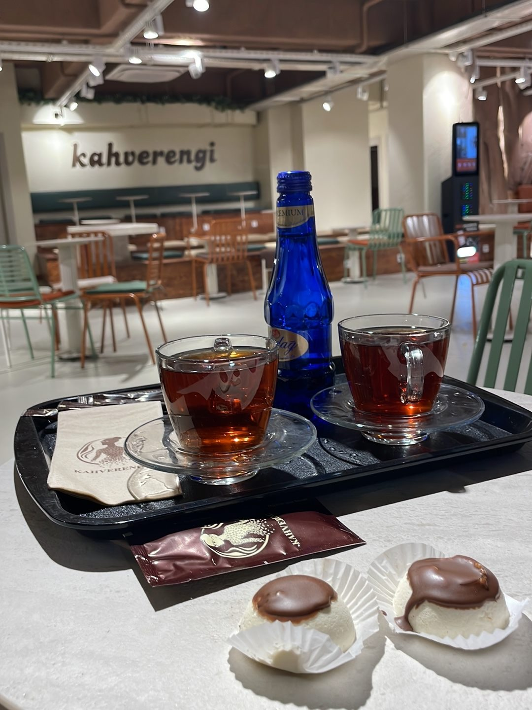
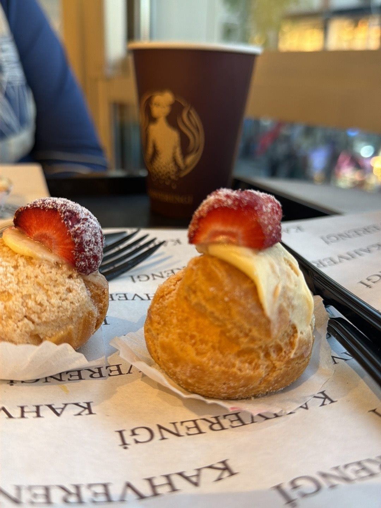
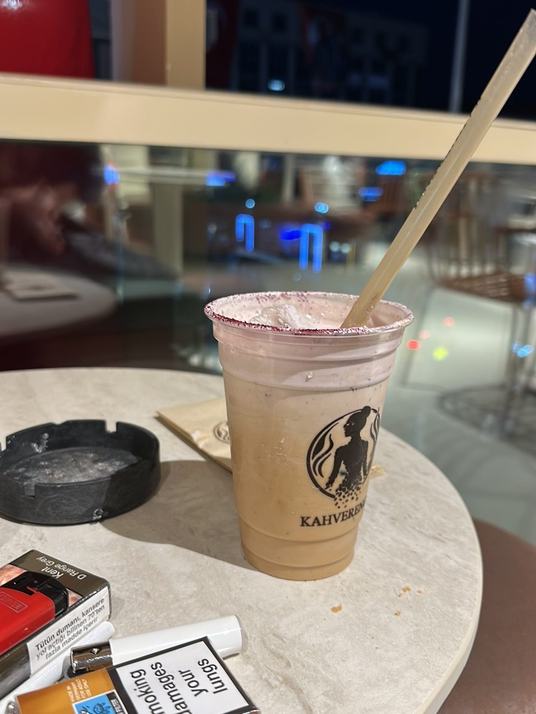

Fincan fincan sohbet.
Birlikte verilen araların, masada uzayan sohbetlerin eşlikçisi.
Reşit Paşa Caddesi, Avcılar
Caddenin telaşından bir masa uzağa.
Kahverengi’de kahvenize ve sohbetinize yer var.

Avcılar’ın merkezinde
Ahşabın sıcaklığı, caddeye açılan geniş camlar ve birlikte oturulacak bir masa. Kısa bir kahve arası da uzun bir sohbet de burada kendine yer bulur.
Google Haritalar’da yol tarifi ↗Sıcak bir fincanla yavaşlayın ya da soğuk bir içecekle gününüze devam edin.

Birlikte verilen araların, masada uzayan sohbetlerin eşlikçisi.

Kahverengi’nin soğuk içecekleriyle günün temposuna küçük bir ara.
Misafirlerimizin gözünden
“Kahveleri de çalışanları kadar kaliteli”Simge DepremYorumu Google’da okuyun ↗
“Harika bir işletme, güler yüz, hızlı hizmet, geniş ve konforlu sosyal alan.”Mehmet Turan TaşdelenYorumu Google’da okuyun ↗
“Çalışanlar güler yüzlü kahveleri mükemmel mekan tasarımı iç dizayn harikulade”Muhammed TUKDANYorumu Google’da okuyun ↗
Google’daki yorumlardan kısa alıntılar. Puan ve yorum sayısı 2 Kasım 2026 tarihinde kontrol edilmiştir.
Güncel çalışma saatleri ve menü bilgisi için telefonla bize ulaşabilirsiniz.